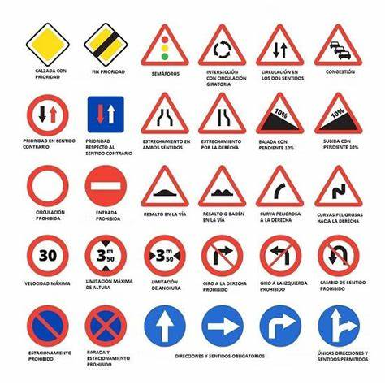

Volver al Menú
¿Cuál es la principal función de las señales de tránsito?

A) Indicar normas de circulación y advertir sobre condiciones de la vía.
B) Decorar las calles y carreteras.
C) Informar sobre la historia de la ciudad.
Enviar